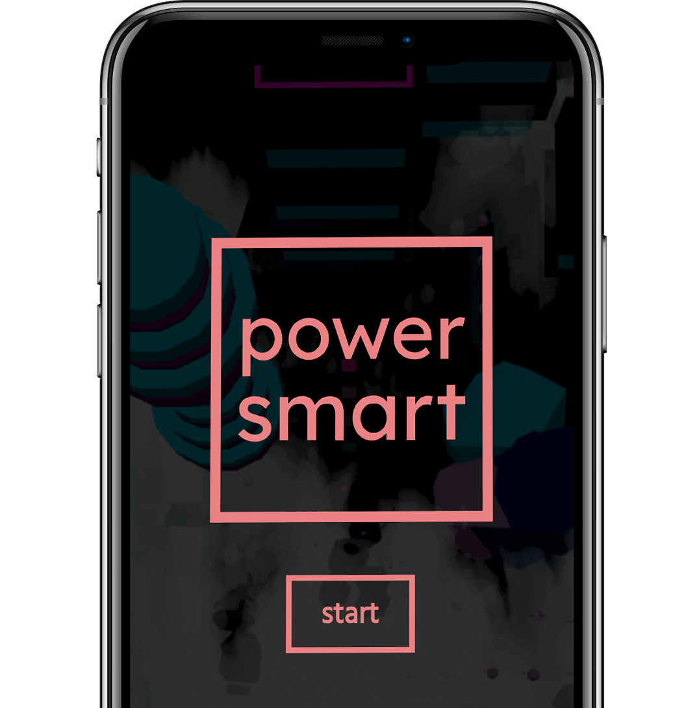
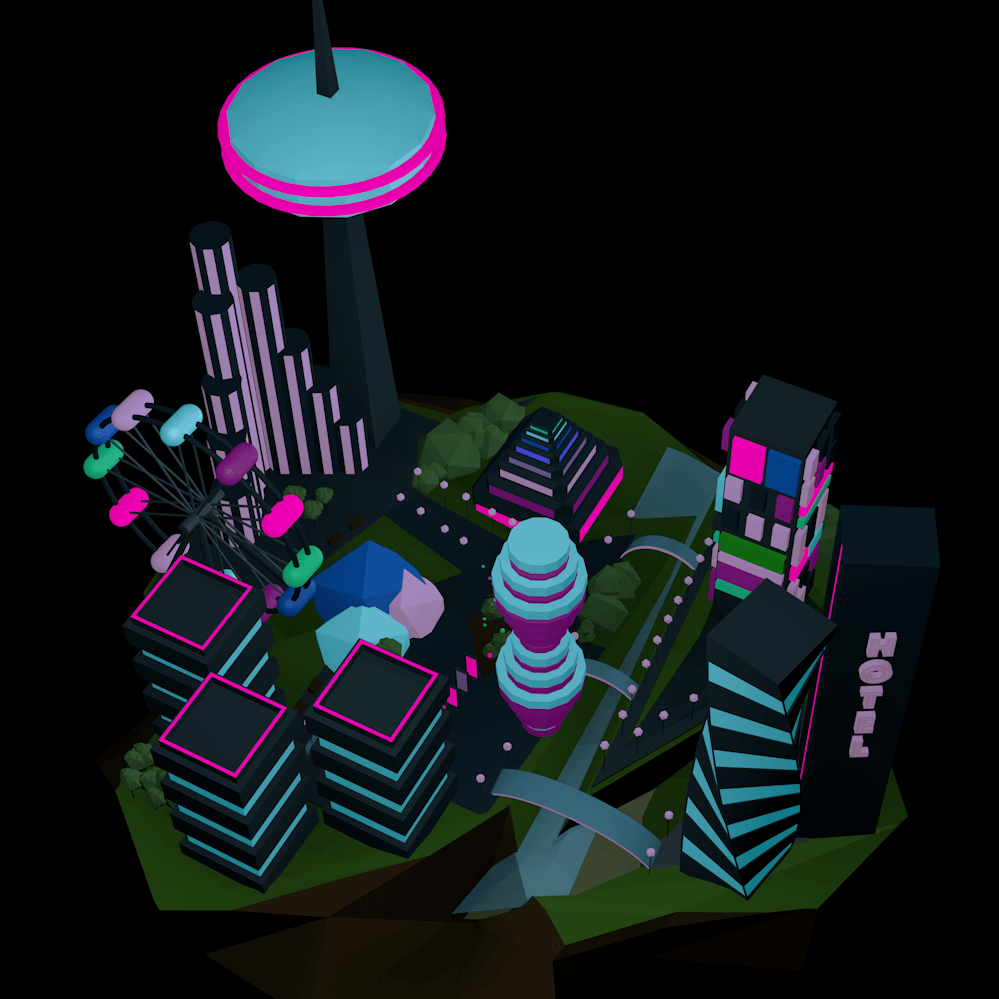
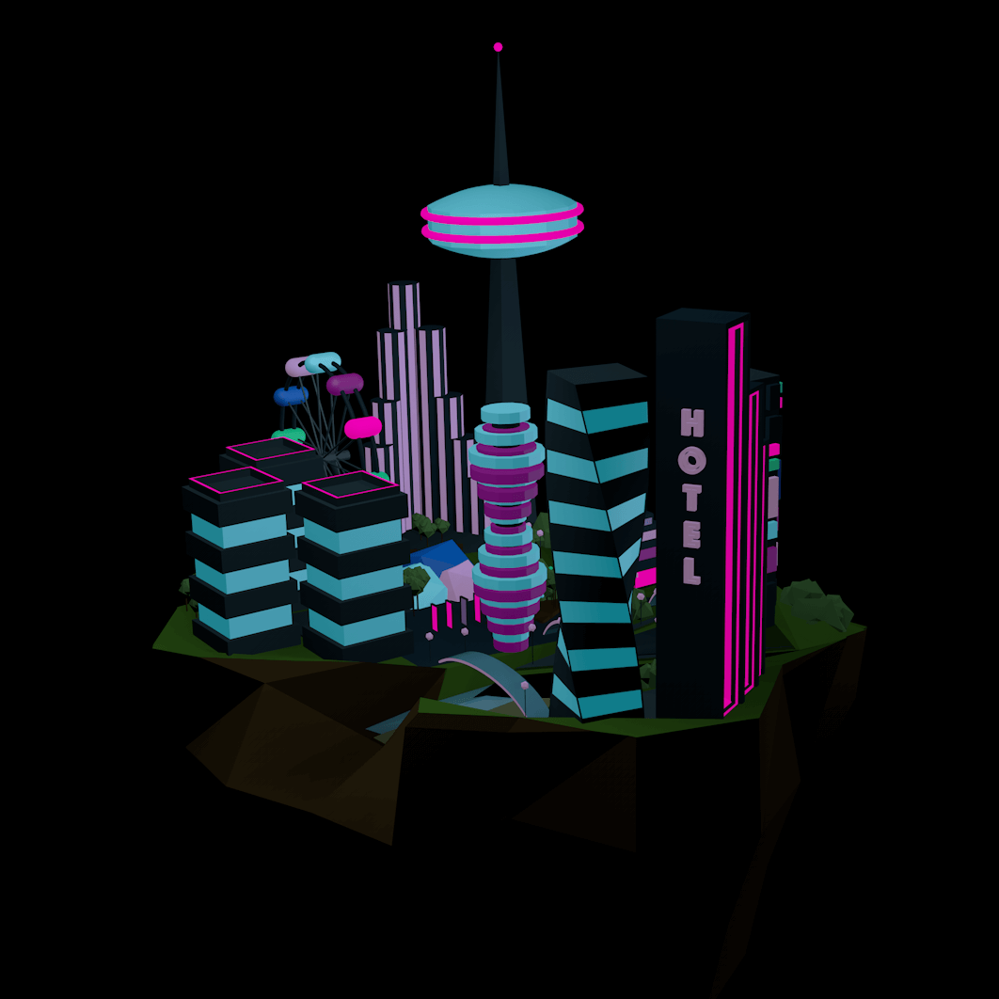
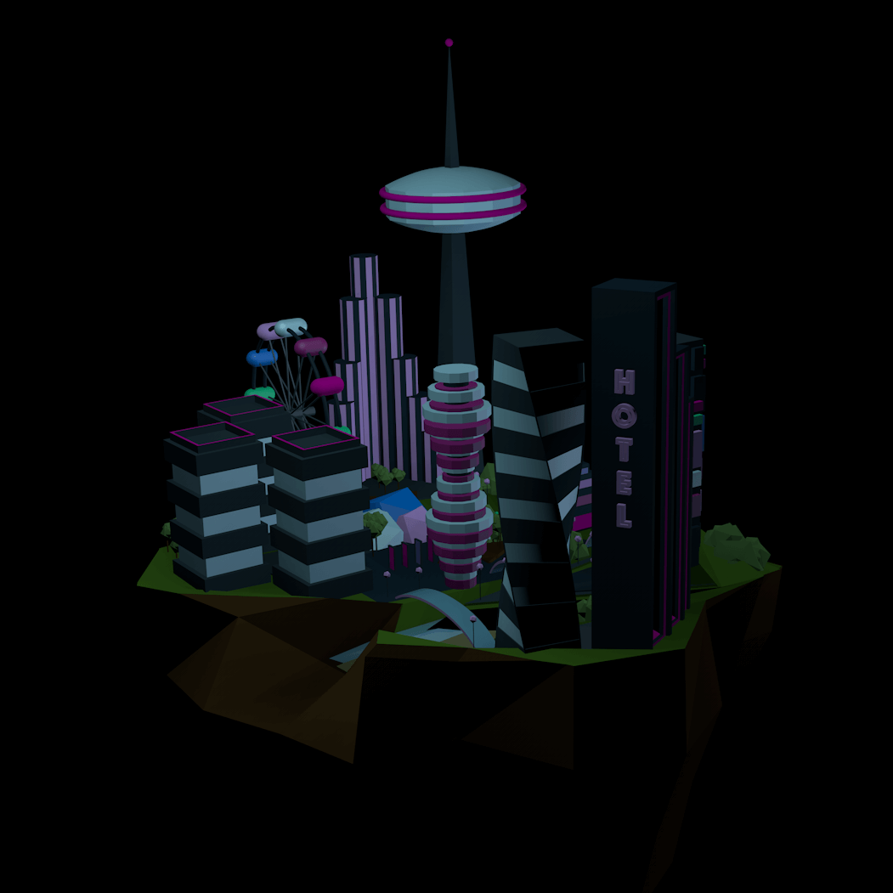
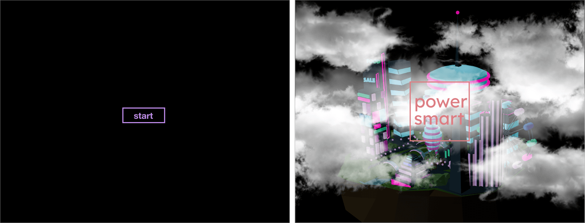
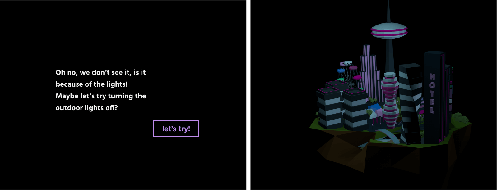
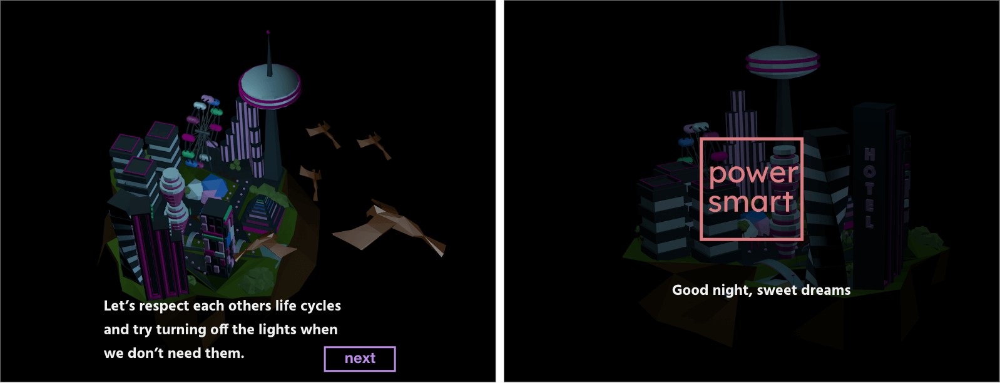

Researching area
Power smart
small story about ligh pollution — fall 2019

Problem statement
How might we bring more attention to light pollution by creating interactive experince?

solution
Interactive web experience introduces people to global light pollution in a fun and engaging way.
My team
Me, Myself, and I!
Design process
1
2
Developing 3D model, designing UI
3
Planning, Making storyboards
4
Coding, delivering the solution
What
Light pollution is getting worse every year. Increasing artificial outdoors lights is hurting not only human life cycles but other organisms too. People from developing countries can no longer see Milky Way on their sky at night because of the light polution.
Why
According to the 2016 groundbreaking “World Atlas of Artificial Night Sky Brightness"
99% of the public in the United States and Europe can’t experience natural night
80% of the world’s population lives under skyglow
Artificial light at night interferes with the timing of necessary biological activities
How
As mentioned before, light pollution has huge impact on biological clocks of all organisms on the Earth. Giving people advantage of controlling the scene will grab their interest and introduce them to ways of participation to help with the global problem.
Why light pollution?
Because the target audience is any user, with any experience with all kind of different background, I wanted my idea to be global enough , but solvable from just one touch - all you need to do to help is just turn off the lights!
design process
After gathering all the information needed, panning out the storyboard I developed moodboard and style tile.
3D modeling in cinema4d



Storyboard
Scene 1: Camera moves towards the city, the clouds are clearing
away.
Scene 2: Camera starts circling around the city.
Scene 3-4: Camera spins around the night city. Loads of noise on the background.

Scene 5: Camera goes up and then down back to the city view.
Scene 6: Street lights go down,
glitches.
Scene 7-8: Camera looks down, starts following the birds, flies around the city.
Scene 9-10: Camera looks down, starts following the birds, flies around the city.
Delivering to web
After a few user tests and critique changes were made, that improved userflow. THREE.JS and TWEEN.JS libraries wre used to put and add interactions to .dae model. Which was exported from Cinema4D.
Try interactive experience!